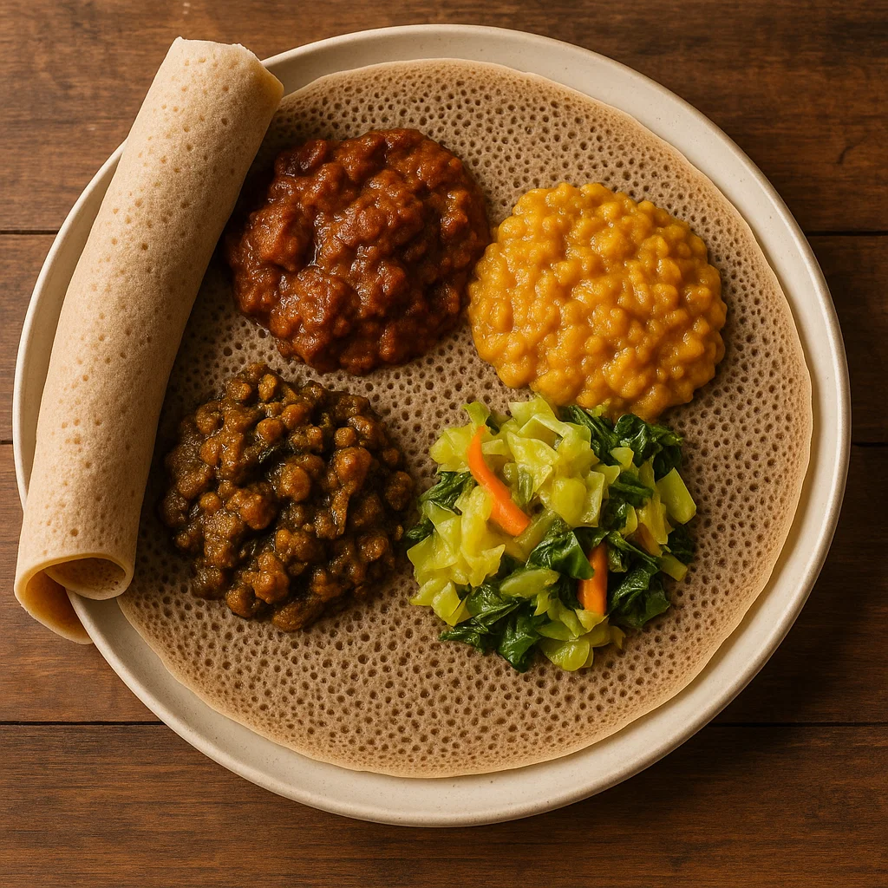

Injera
El pan más emblemático de Etiopía. Una crepa esponjosa, de textura ligeramente ácida, que se utiliza como base para servir guisos.
- Origen: Etiopía
- Características: Harina de teff fermentada.
- Curiosidad: se come con las manos, utilizando el injera como “cuchara” para llevar alimentos a la boca.
